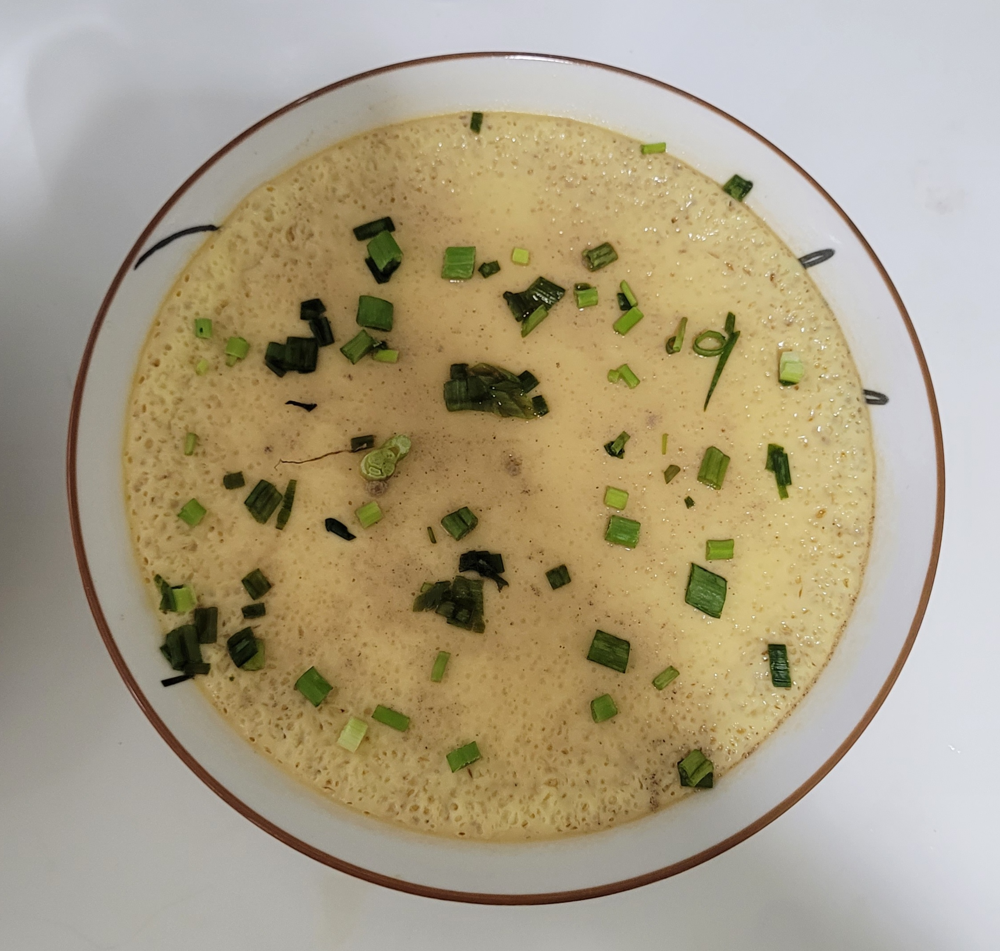

Steamed Egg

Description
Delicate, silky smooth steamed egg that is so easy to make, so easy to gobble down!
Ingredients
Serving size: 4 people
- 4 eggs (200ml)
- 2 parts warm water (400ml)
- 2 stalk scallions
- 1/2 tbsp salt
- 2 tsp light soy sauce
- dash of white pepper, to taste
Instructions
- Boil water in a pan with steamer rack then reduce to simmer.
- Crack the egg into a mixing bowl.
- Add salt & whisk.
- Use a strainer and pour the eggs in as you sieve away the bubbles.
- Cover and leave a gap for excessive steam to escape.
- Steam for about 5-10 min. Eggs should shake with a gelatin-like consistency.
- Switch off heat & remove steamed eggs from steamer.
- Add sauce, season with white pepper and garnish with scallions and serve.